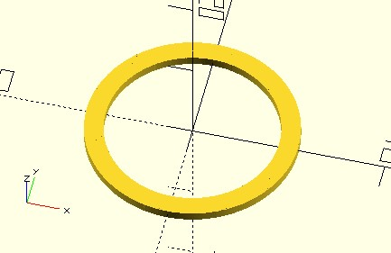
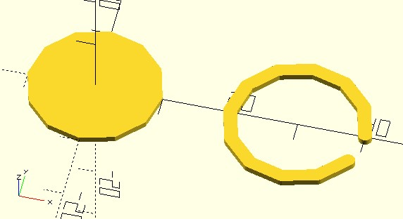
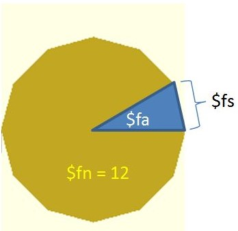
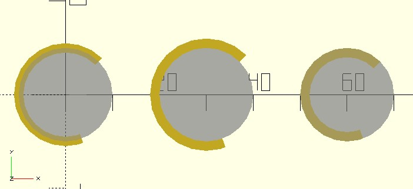
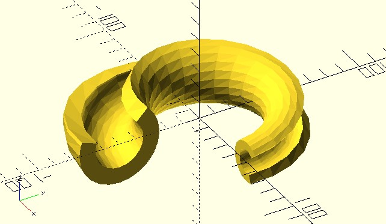
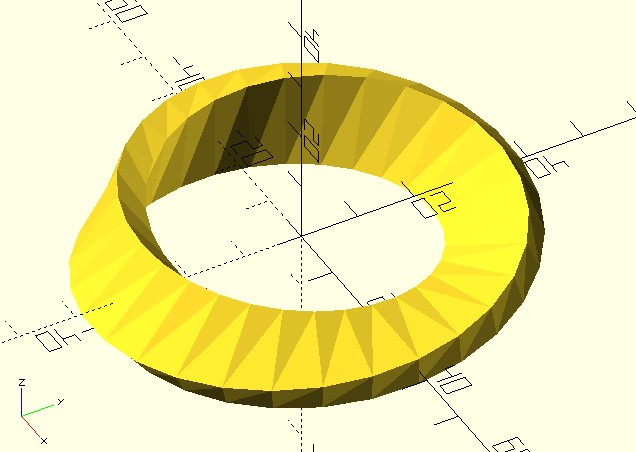

從圓到弧
March 6, 2022想要繪製曲線，必須先知道規則，具體而言，就是數學公式，連續曲線都可以找到公式來描述，只是你找不找得出來罷了…XD
圓的組成
在無數的曲線當中，圓應該是大家最熟悉的一個，若半徑為 radius，圓的公式是 (radius * cos(θ), radius * sin(θ))，θ 從 0 到 360，這個公式先前曾經使用過幾次，例如在〈list 表示式〉曾經用這個公式來畫過弧（arc），如果想畫個圓也很簡單：
use <polyline_join.scad>
radius = 10;
thickness = 2;
points = [
for(a = [0:360])
radius * [cos(a), sin(a)]
];
polyline_join(points)
circle(thickness / 2, $fn = 24);
這邊使用了 dotSCAD 的 polyline_join 模組，將指定的一組點，以指定的 circle 作為接點，兩兩 hull 後就可以畫出多個線段，由於線段很多，看來就像個圓了：

在 OpenSCAD 中，圓其實是以正多邊形來表示，在〈圖形布林運算〉談過 $fn 特殊變數，可用來設置正多邊形的邊數，這時你會想，可否根據 $fn 來繪製方才的圓呢？是可以！你可以自己實現看看，不過 dotSCAD 提供了 shape_circle 函式，可以產生正多邊形的頂點，也支援 $fn 特殊變數。例如：
use <shape_circle.scad>
use <polyline_join.scad>
radius = 10;
thickness = 2;
points = shape_circle(radius, $fn = 12);
polygon(points);
translate([radius * 3, 0])
polyline_join(points)
circle(thickness / 2, $fn = 24);
在 dotSCAD 中，shape_ 開頭的函式，可產生供 polygon 使用的多邊形頂點，就上例來而言，shape_circle 設置了 $fn 為 12，會產生 12 個頂點，如果想當成是曲線的頂點來使用也是可以，範例繪製的結果會是：

右邊看來是個弧，若想畫出一個圓，可以將最後一個頂點與第一個頂點相接，例如將上例的 polyline_join(points) 改為 polyline_join([each points, points[0]])，就可以畫出圓。
跟圓有關的特殊變數，除了 $fn，其實還有 $fs 與 $fa，因為圓在 OpenSCAD 是以正多邊形表示，$fs 可以用來控制正多邊形的邊長；圓也可以看成是邊上兩個頂點與圓心相關的三角形其中一邊，三角形的銳角越小，需要的三角形就越多，圓就越細緻，這可以使用 $fa 特殊變數控制：

大部份的情況下會使用 $fn，必要時可考慮使用 $fa 或 $fs，dotSCAD 與圓相關的模組或函式，$fn、$fs 與 $fa 都支援。
建立弧線
方才的範例，由於將最後一個頂點與第一個頂點相接，基於 polyline_join 畫了弧線，不過，因為指定 polyline_join 用 circle 連接，弧線起點與終點的形狀，就是基於 circle。
如果想要弧線的起點與終點是平的，並可以指定起始與終止角度，可以使用 arc 模組，例如：
use <arc.scad>
radius = 10;
$fn = 24;
arc(radius, angle = [45, 290], width = 2);
%circle(radius);
translate([radius * 3, 0]) {
arc(radius, angle = [45, 290], width = 2, width_mode = "LINE_OUTWARD");
%circle(radius);
}
translate([radius * 6, 0]) {
arc(radius, angle = [45, 290], width = 2, width_mode = "LINE_INWARD");
%circle(radius);
}
arc 模組支援 $fn 等特殊變數，width_mode 可設定線是在圓上（預設）、圓外還是圓內，這會繪製出以下的模型：

shape_ 的擠出
dotSCAD 有個 shape_arc 函式，它產生的頂點可以提供給 polygon 繪製多邊形，事實上 arc 模組內部就是基於 shape_arc 與 polygon 實現。
dotSCAD 中 shape_ 開頭的函式，除了可以給 polygon 繪製多邊形、作為曲線的頂點資訊，還有個作用，它們都可以透過〈2D Shape Extrusion〉模組來進行擠出。
例如，ring_extrude 可以實現環狀擠出，可以視為 rotate_extrude 的進階版，因為它還支援 twist、scale 等參數：
use <shape_arc.scad>
use <ring_extrude.scad>
radius = 10;
$fn = 24;
arc = shape_arc(radius, angle = [45, 290], width = 5);
ring_extrude(arc, radius = 50, angle = 270, twist = 90, scale = 2);
twist 可以在擠出過程設定扭轉總角度，scale 可設定縮放級數，這會繪製出以下的模型：

想要建個莫比烏斯帶嗎？以下的程式碼就可以完成喔！
use <shape_square.scad>
use <ring_extrude.scad>
rect = shape_square(size = [15, 5]);
ring_extrude(rect, radius = 30, twist = 180);
這會建立以下的結果：
